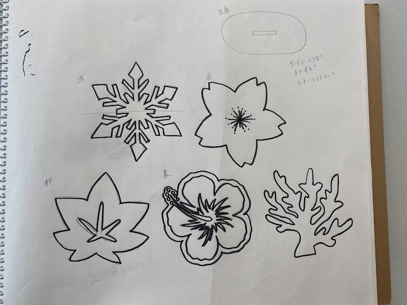

作品を制作するにあたって季節感があったらいいなと思い、冬をテーマにしてデザインを考えました。
最初の段階では、四季を表そうと思っていたのですが一部複雑なデザインができてしまい、
それを表現することが難しかったため、冬だけに絞ることにしました。
これらはアイディアを出すときに書いたデザインです。 

四季を表すイラストを書いて、それらをモチーフにして製作しようと考えました。
しかし、ここで夏を表すモチーフが決まらず、ハイビスカスを書いたのですが、これをFusionでデザインするのが難しいと思ったため断念しました。泣
冬をテーマに製作を始め、写真のものが実際に製作したものです！


土台の部分を結晶の形にして冬を表現しました。
スタンドの木の部分は自分でデザインするのが難しく、サイトを参考にしながらFusion360で作りました。
dxfファイルはこちらです。
スタンド 結晶
感想
複雑なデザインにしてしまったため、テーマを絞って製作したことが今回の良かった点だと思った。レーザーカットを初めて